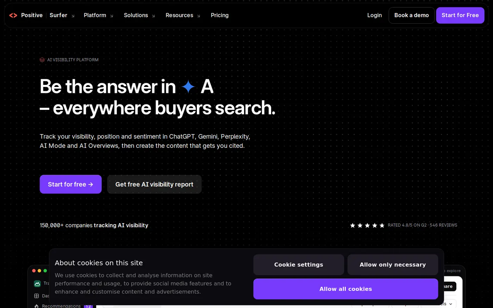
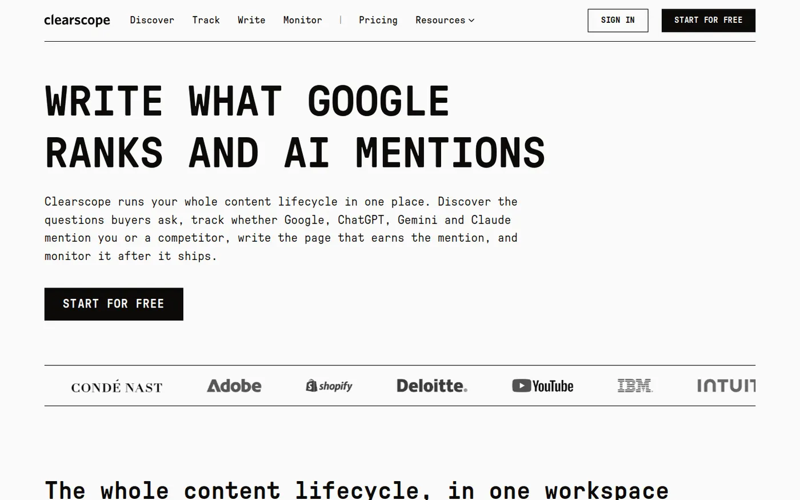
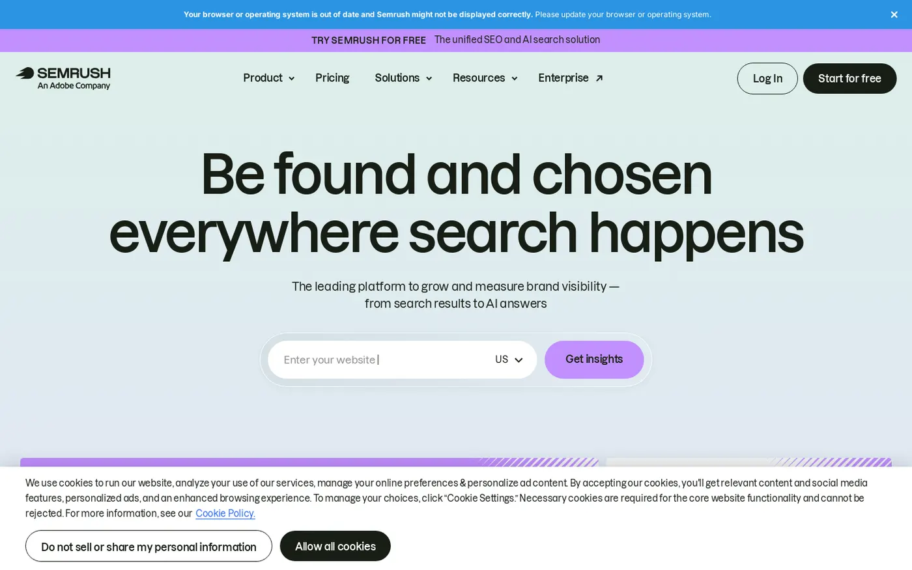
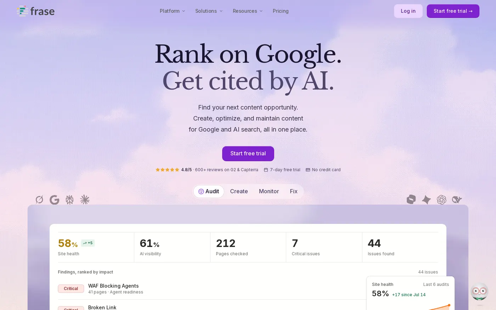
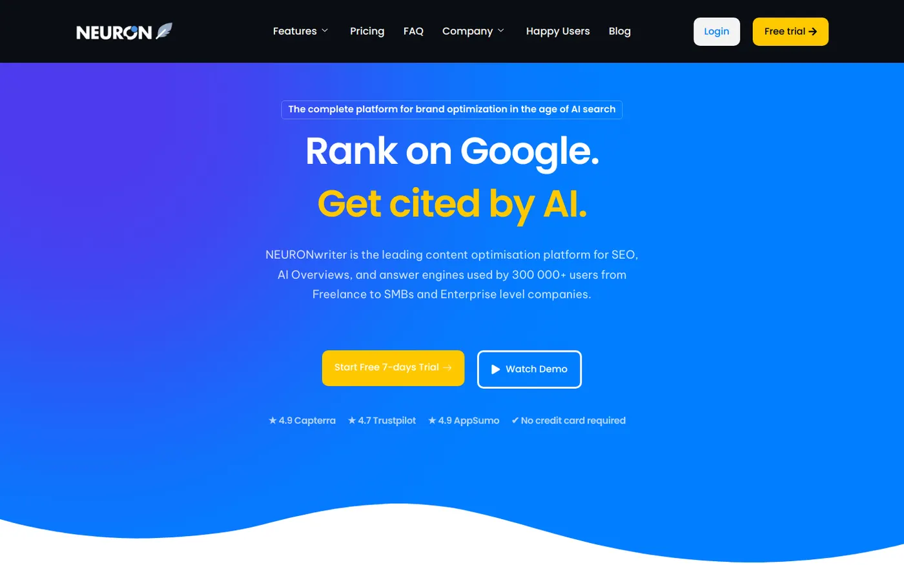
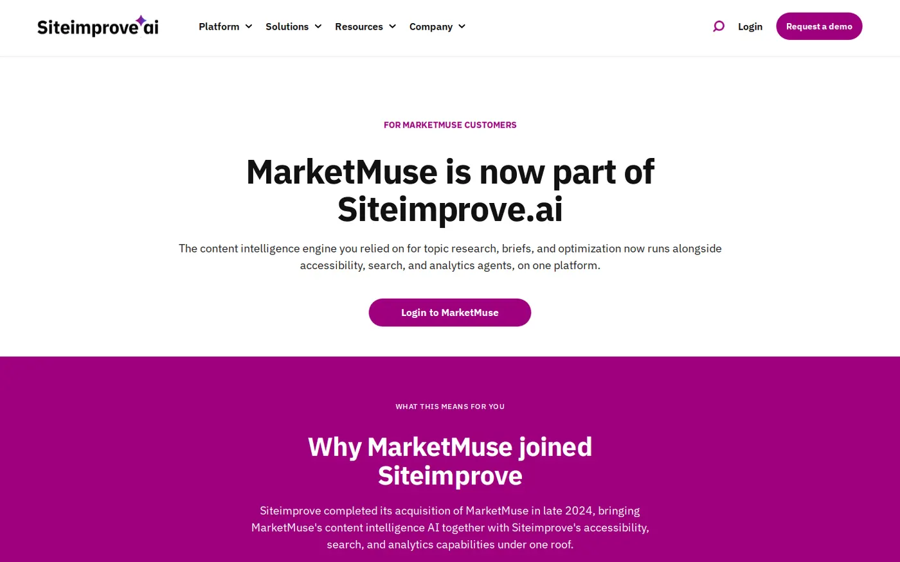
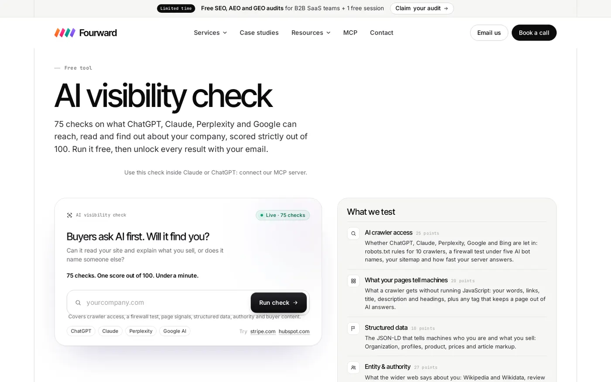

On this page
Web optimizer software for content, usually called a content optimization tool, compares your page with the pages that already rank for the same keyword and gives it a score. For most SaaS teams, Surfer is the strongest all-round pick, Clearscope suits larger editorial teams, and NEURONwriter or Frase fit a small budget. Entry plans run from $23 a month to $129 a month.
This post compares 8 tools on how they score a page, what they track in AI answers and what they cost. I checked every fact on each vendor's own website on 21 November 2026.
I work at Fourward, which publishes this guide. One entry is ours: the free AI visibility check, listed last. Every other fact comes from that company's own website, checked on 21 November 2026. No vendor paid to be included.
- Web optimizer software for content is a tool that scores a page against the pages ranking for the same keyword, then suggests missing terms, headings and topics.
- Surfer's score, for example, runs from 0 to 100 and compares your draft with the top 20 pages ranking for your target query.
- A high score is not a ranking guarantee. Google says it has no preferred word count, and its guidance asks for original information, not summaries of what already ranks.
- Entry prices run from $23 a month (NEURONwriter) to $129 a month (Clearscope). Surfer, Frase and Semrush show prices billed yearly.
- Surfer, Clearscope and Frase now also track whether AI answers mention your brand, so one tool can cover Google and AI search.
What web optimizer software for content does
A content optimization tool starts with a keyword. It reads the pages ranking for that keyword on the search engine results page (SERP), finds what they share and turns that into a checklist.
Most tools give you the same handful of things:
- Content scoreA number that shows how closely your page matches the ranking pages. Surfer's runs from 0 to 100.
- Terms and topicsWords and subtopics the ranking pages use that your page does not.
- StructureSuggested headings, sections and length, based on the ranking pages.
- Audits of old pagesA check of pages you already published, to find the ones worth refreshing.
- AI search trackingNewer plans also check whether AI answers, such as ChatGPT or Google's AI Overviews, mention your brand.
These tools help a writer cover a topic fully. They cannot tell you what your page should say that no other page says.
How a content score is worked out
Each vendor keeps its exact formula private, but Surfer's help centre explains the basics. Surfer calls its Content Score "Surfer's overall content optimization metric, scored from 0 to 100". It benchmarks your draft against the top 20 pages ranking for your target query.
Surfer also splits the score in two. An SEO Score measures fit for classic search engines, and an AI Search Score measures fit for AI-powered search.
What a score cannot tell you
A score measures how similar your page is to what already ranks. Google's guidance on helpful content asks questions that a score does not answer.
- Is the page mainly a summary of what others say, without adding much value?
- Does the content provide original information, reporting, research or analysis?
- Are you writing to a word count because you think Google prefers one? Google's answer is that it does not.
So a page can score well and still add nothing new. Treat the score as a check that you covered the basics, then add what only your team knows.
How I picked them
I have been writing and ranking B2B content since 2020, and I lead search, content and AI visibility at Fourward. I started from the content optimization tools SaaS teams ask about most, then kept the ones with a public website and a clear way to start.
For each tool I read its pricing page and, where useful, its help pages. I noted how it scores, what the entry plan includes, its AI search features and its free option. I did not create accounts or run paid tests, so nothing here claims hands-on results.
The 8 tools at a glance
The same five questions for every tool. Scroll the table sideways on a phone.
| Tool | Best for | Starts at | Entry plan includes | AI search tracking |
|---|---|---|---|---|
| Surfer | One score for Google and AI search | $49/mo, billed yearly | 120 documents | From Standard, or a separate $82/mo plan |
| Clearscope | Teams with many writers | $129/mo | 20 drafts a month, unlimited users | 50 tracked queries |
| Semrush Content Toolkit | Teams already on Semrush | $60/mo, billed annually | 5 SEO content boosts a month | Not listed on this toolkit |
| Frase | Writing plus AI tracking on a budget | $39/mo, billed yearly | 10 articles a month, 1 seat | 20 prompts |
| NEURONwriter | The lowest monthly price | $23/mo | 25 documents, 2 projects | AI visibility features listed |
| PageOptimizer Pro | Fixing pages that already exist | $40/mo | 20 credits a month | Not listed on the pricing page |
| MarketMuse | Large sites on Siteimprove | No public price | Not shown | Not shown |
| Fourward AI visibility check | Seeing what AI engines can read | Free | 75 checks | Checks your site, not prompts |
1. Surfer
Best for SaaS content teams that want one score covering Google and AI search.

Surfer is built around its Content Editor, which gives "live guidelines" while you write a new page or refresh an old one. The Content Score compares your draft with the top 20 pages ranking for your target query.
The score now has two parts: an SEO Score for classic search and an AI Search Score for AI-powered search. Surfer also sells AI visibility tracking, which checks whether ChatGPT, Gemini and AI Overviews mention your brand.
- How it scores0 to 100, against the top 20 ranking pages, split into an SEO Score and an AI Search Score. Help page
- AI searchStandard tracks 25 AI prompts, refreshed weekly. A separate AI Search Analytics plan is $82 a month billed yearly.
- PricingDiscovery $49 a month for 120 documents, Standard $99 for 360 documents, both billed yearly. Pricing page
- BillingThe plan cards show yearly prices only.
My take The strongest default for a SaaS team that publishes often. The plan cards do not say whether document limits are monthly or yearly, so ask before you commit to a year.
2. Clearscope
Best for Editorial teams where many writers and editors need one clear target per draft.

Clearscope gives writers recommendations for each draft. Its pricing page says these are "powered by deep language analysis and search intelligence to help your content perform across Google and AI-driven discovery".
Clearscope also tracks queries, to show where your brand appears across search engines and AI systems, not only where you rank.
- How it scoresRecommendations from language analysis and search data. The pricing page does not explain the scoring method.
- AI search50 tracked queries on Essentials, 300 on Business.
- PricingEssentials $129 a month for 20 drafts a month and 50 pages. Business is $399 a month. Users and projects are unlimited. Pricing page
- Free optionA 14-day free trial.
My take The highest entry price here, but unlimited users make it cheaper per person for a larger team. Check that 20 drafts a month covers your new pages and your refreshes together.
3. Semrush Content Toolkit
Best for Teams already paying for Semrush that want writing and optimization in the same account.

Semrush sells its content tools as a separate Content Toolkit. The toolkit's pricing page lists "AI and SEO content optimization" among the base plan's features. If you are weighing Semrush against its main rival, our Semrush vs Ahrefs comparison covers the wider suites.
- How it scoresThe toolkit's pricing page does not explain how drafts are compared with ranking pages.
- Included5 SEO content boosts a month on the base plan.
- Pricing$60 a month, billed annually. Pricing page
- Free optionSemrush's general free trial for seven days.
My take Good value if Semrush is already open all day. The pricing page says little about scoring, so test the recommendations during the trial before you pay for a year.
4. Frase
Best for Small SaaS teams that want writing help and AI prompt tracking in one plan.

Frase sells itself as an SEO and GEO content platform. GEO (generative engine optimization) means shaping content so AI engines cite it. Every plan includes AI prompt tracking.
Frase keeps tracking and writing apart. Its pricing page says AI Visibility "monitors AI engines and alerts you, and it never touches your content".
- How it scoresThe pricing page does not explain the scoring method.
- AI search20 tracked prompts on Starter, 50 on Professional.
- PricingStarter $39 a month for 10 articles and 1 seat. Professional $103 a month for 40 articles and 3 seats. Both prices are billed yearly, $468 and $1,236. Pricing page
- Free optionA 7-day free trial, with no credit card.
My take A low-cost way to get content help and AI prompt tracking from one vendor. Ten articles a month on Starter fits a blog that publishes about twice a week.
5. NEURONwriter
Best for Freelancers and small teams that want the lowest monthly price.

NEURONwriter calls itself a "Content Optimization & AI Visibility Platform". Its plans are priced by projects and documents, with AI credits on each plan.
- How it scoresThe pricing page does not explain the scoring method.
- AI searchAI visibility monitoring is listed on its plans.
- PricingBronze $23 a month for 2 projects and 25 documents, or $230 a year. Gold $69 a month for 10 projects and 75 documents. Pricing page
- Free optionA 7-day free test on Gold plan terms after you create an account.
My take The lowest price in this list, billed monthly. Check that the editor's suggestions make sense in your market during the free week.
6. PageOptimizer Pro
Best for SEO leads who want to fix pages that already exist, one report at a time.
PageOptimizer Pro (POP) works on credits, where each report uses some of your monthly allowance. POP says it "provides edge analysis to show you where you can get an edge on your competitors and rank better".
- How it scoresEdge analysis against competitor pages. The pricing page does not explain the scoring method in full.
- PricingBasic $40 a month for 20 credits. Unlimited $72 a month, or $62 a month paid annually, for 50 credits. Pricing page
- Free optionNo free trial is listed, but monthly plans have a 7-day refund guarantee.
My take A good fit for refreshing old pages that rank just below Google's first page. Watch your credits if you re-run reports after every edit.
7. MarketMuse
Best for Large content sites that already use Siteimprove.

MarketMuse is now part of Siteimprove, which "completed its acquisition of MarketMuse in late 2024". Siteimprove describes it as the engine for "topic research, briefs, and optimization".
- How it scoresIt shows "where you already have topic authority and where competitors have gaps". The page does not explain the scoring method.
- Where it livesInside Siteimprove.ai, next to its accessibility, search and analytics tools.
- PricingNo public price. Siteimprove offers a demo.
My take Worth a call if your company already pays for Siteimprove. For a small SaaS team, the tools above are easier to price and start.
8. Fourward AI visibility check
Best for SaaS teams whose pages score well but never show up in AI answers.

Every tool above scores the words on a page. That does not help if AI engines cannot read your site in the first place. I built this free check for that question: it runs 75 checks on what AI engines can read about a site.
It does not score drafts against ranking pages, so it will not replace any tool above. Use it alongside them.
- What it checks75 checks on what AI engines can read about your site.
- PriceFree.
- Pair it withOur free AI crawler checker, which tests 20 AI crawlers, your robots.txt file and your firewall.
My take Run it before you pay for AI tracking inside a content tool. If AI crawlers are blocked, no content score will change that. Run the free check.
Free check. 75 checks, one score out of 100, under a minute.
What content optimization tools cost
The cheapest paid plan for each tool, from lowest to highest price. Prices are in US dollars, as published on 21 November 2026.
| Tool | Entry plan | Price a month | Billing | Included |
|---|---|---|---|---|
| NEURONwriter | Bronze | $23 | Monthly | 25 documents, 2 projects |
| Frase | Starter | $39 | Yearly, $468 | 10 articles, 20 AI prompts |
| PageOptimizer Pro | Basic | $40 | Monthly | 20 credits |
| Surfer | Discovery | $49 | Yearly | 120 documents |
| Semrush | Content Toolkit | $60 | Yearly | 5 SEO content boosts |
| Clearscope | Essentials | $129 | Monthly | 20 drafts, 50 tracked queries |
| MarketMuse | Through Siteimprove | Not public | Demo | Not shown |
Billing terms differ, so compare prices on the same billing basis. Surfer, Frase and Semrush show prices billed yearly, so the first payment covers a full year.
Count how many pages you will publish or refresh each month, then compare what each plan includes. A cheap plan with too few drafts costs more once you add extra credits.
How to choose web optimizer software for content
Start with what you already pay for, how many people write and whether you need AI search tracking in the same tool. Pick your keywords first: a score is only as useful as the keyword behind it, as our guide to keyword research tools explains.
| Your situation | Start with | Why |
|---|---|---|
| You publish a few posts a month on a small budget | NEURONwriter or Frase | From $23 a month, or $39 billed yearly with AI prompts |
| Your team already pays for Semrush | Semrush Content Toolkit | Same account, $60 a month billed annually |
| You want one score for Google and AI search | Surfer | SEO Score plus AI Search Score |
| Many writers and editors share one target | Clearscope | Unlimited users from $129 a month |
| You mainly refresh pages that already exist | PageOptimizer Pro | Pay per report with credits |
| Your company already runs Siteimprove | MarketMuse | Part of Siteimprove.ai |
| AI answers never mention you | Fourward AI visibility check | Free, and shows what AI engines can read |
Mistakes SaaS teams make with content scores
A content score is a useful check. It goes wrong when a team treats it as the goal.
- Chasing a perfect score. A perfect score often means using the same terms as every other ranking page. Stop when the page covers the topic, then spend the time on what is new.
- Writing to a word count. Google says it has no preferred word count. Let the reader's question set the length.
- Skipping original material. Google asks whether content provides original information, research or analysis. Add your own product data, screenshots or the questions customers ask on sales calls.
- Expecting quick results. Frase's own pricing page says "Rankings and AI citations are the slow part". Judge a refresh over months, not days.
- Buying before you have a publishing schedule. A content tool pays off only when pages go out regularly. Our guide to SEO tools for SaaS shows where it fits in a full tool stack, and our SEO guide for B2B SaaS covers what to publish first.
Use the score to catch gaps, not to write the page. The parts that win are the ones no ranking page has yet.
A full SEO, AEO and GEO audit, plus 30 minutes with our team to walk you through it.
FAQs
What is web optimizer software for content?
It is a tool that compares your page with the pages ranking for the same keyword and gives it a score. It then suggests terms, headings and topics to add. Surfer, Clearscope, Frase and NEURONwriter are common examples.
Does a higher content score mean better rankings?
Not on its own. A score shows how closely your page matches pages that already rank. Google's guidance asks for original, helpful content and says it has no preferred word count.
How much does content optimization software cost?
Entry plans run from $23 a month (NEURONwriter) to $129 a month (Clearscope). Surfer starts at $49 a month and Frase at $39 a month, both billed yearly. MarketMuse has no public price.
Is there a free content optimization tool?
Most tools here offer a trial instead of a free plan. Clearscope's trial lasts 14 days, and Frase, NEURONwriter and Semrush offer 7 days. PageOptimizer Pro has a 7-day refund guarantee instead.
Do content optimization tools help with AI search?
Some now cover it. Surfer's score includes an AI Search Score, and Surfer, Clearscope and Frase track whether AI answers mention your brand. AI engines also need to read your site, which a free check such as Fourward's AI visibility check shows.
Sources
- What is Content Score?, Surfer help centre, checked 21 November 2026.
- Surfer: Pricing for AI Search Visibility, Surfer, checked 21 November 2026.
- Plans & Pricing, Clearscope, checked 21 November 2026.
- Content Toolkit Pricing, Semrush, checked 21 November 2026.
- Frase Pricing: SEO & GEO Content Platform Plans, Frase, checked 21 November 2026.
- Pricing, NEURONwriter, checked 21 November 2026.
- Pricing page, PageOptimizer Pro, checked 21 November 2026.
- MarketMuse is now part of Siteimprove.ai, Siteimprove, checked 21 November 2026.
- Creating helpful, reliable, people-first content, Google Search Central, checked 21 November 2026.